嵌入式系统原理
第一章 导论
嵌入式系统是一切非PC和大型计算机系统。
第二章 Cortex-M3 微处理器
1. 内核结构
- 核心架构：Cortex-M3 是基于 ARMv7-M 架构的 32 位处理器内核，采用高性能的哈佛结构，寻址能力为4GB。
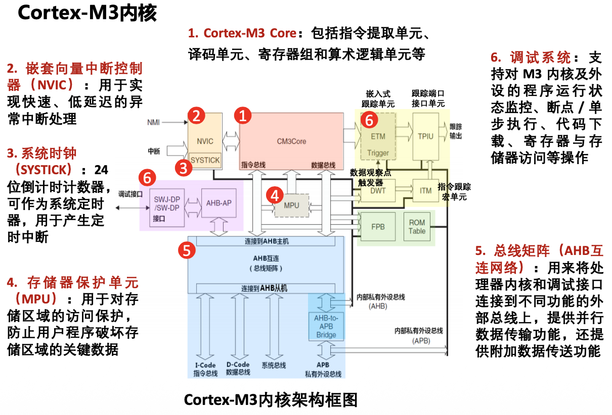
- 设计模式：ARM 公司设计内核，芯片制造商（如 ATMEL、NXP、TI）在此基础上添加不同的外设、存储器和 I/O，形成各类微控制器 (MCU)。
2. 流水线技术
- 定义：将指令分解为多步并重叠执行，以实现并行处理。
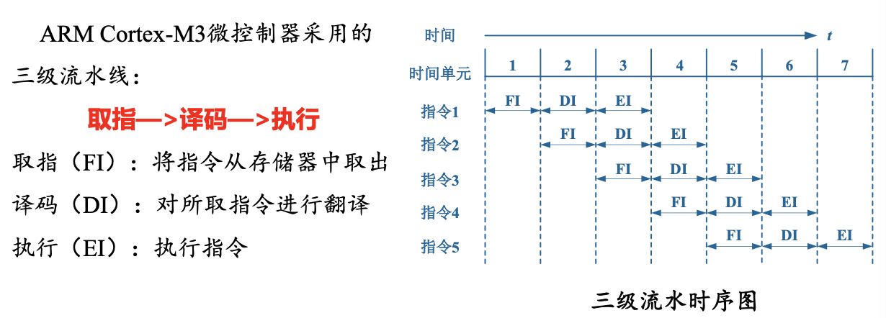
- 流水线技术三大指标：吞吐率、加速比、效率
（1）吞吐率
- 单位时间内完成的指令条数
- $流水时间 = 三个阶段总时间 + （指令条数 -1）\times 时间最长的阶段$
例题：
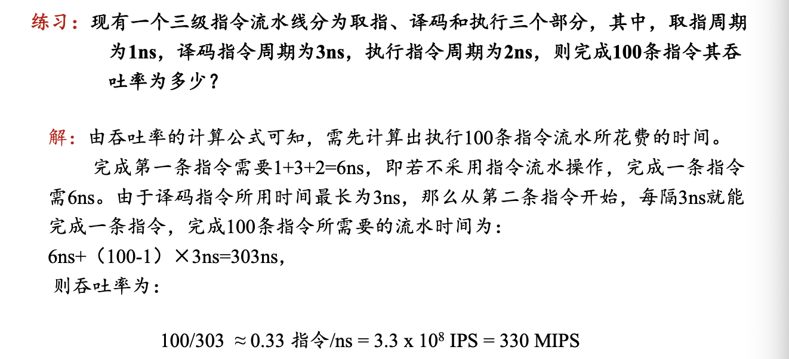
（2）加速比
- 不使用流水线时间和使用流水线时间之比
若流水线各段时间均为 $\Delta t$，流水线级数 $m$，指令数为 $n$：
分子：$nm\Delta t$
分母：$m\Delta t + (n-1)\Delta t$ （流水线计算公式）
则加速比为：
注意：平衡的流水线效率更优
3. 系统总线
- 总线：计算机中，各个部件之间传送信息的公共通路
- 分类：数据总线、地址总线、控制总线
AMBA
- AMBA 是一种高级微控制器总线架构
主要包含以下两种不同的标准：
- AHB（Advanced High-performance Bus）：高级高性能总线
- 多个主机和多个从机的连接
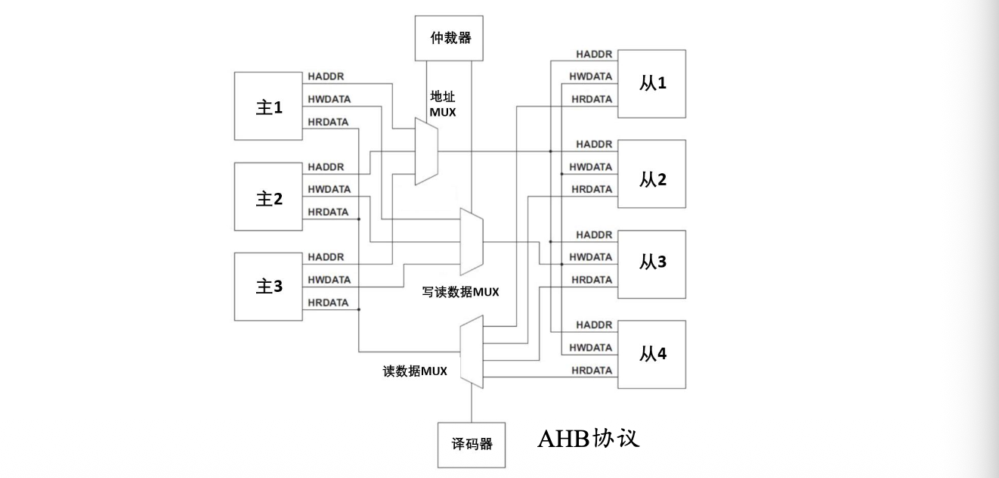 - AHB-lite：单个主机和多个从机
- 多个主机和多个从机的连接
- APB（Advanced Peripheral Bus）：高级外设总线
- 低成本、低功耗、结构简单
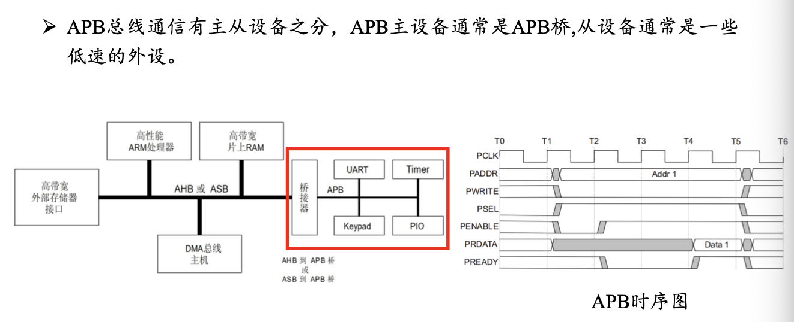
- 低成本、低功耗、结构简单
Cortex-M3 总线结构
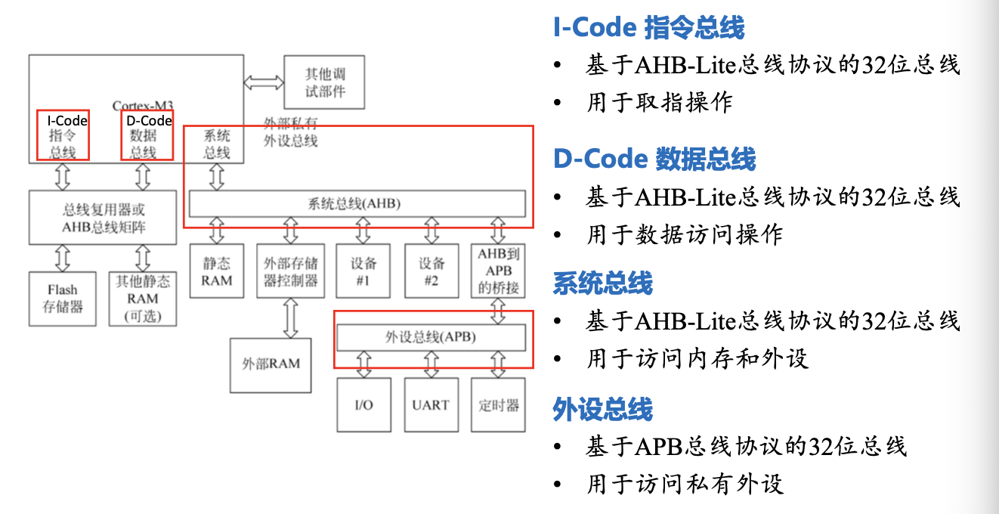
4. 寄存器与储存结构
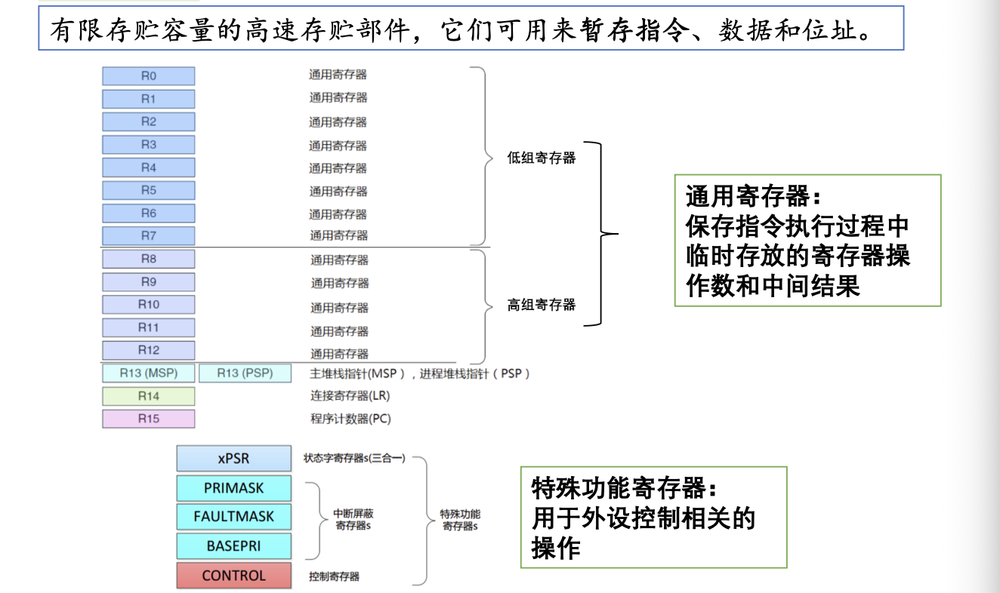
- 堆栈：先进后出，由一块连续内存、一个栈顶指针组成
- 储存结构：Crtex-M3与外设统一编址，这种方式称为储存器地址映射
5. 工作模态
（1）两种模式与特权等级
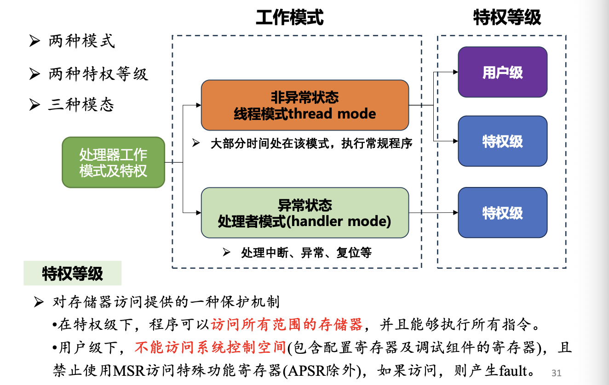
（2）三种模态
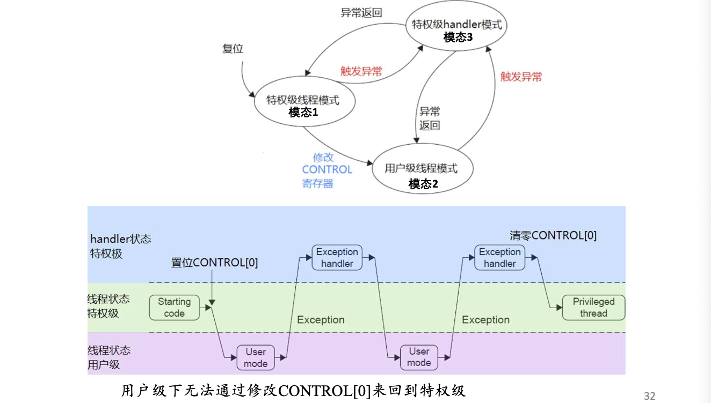
6. 中断与异常
（1）中断悬起
- 如果中断发生时，正在处理更高优先级异常/中断被屏蔽，此时中断被悬起
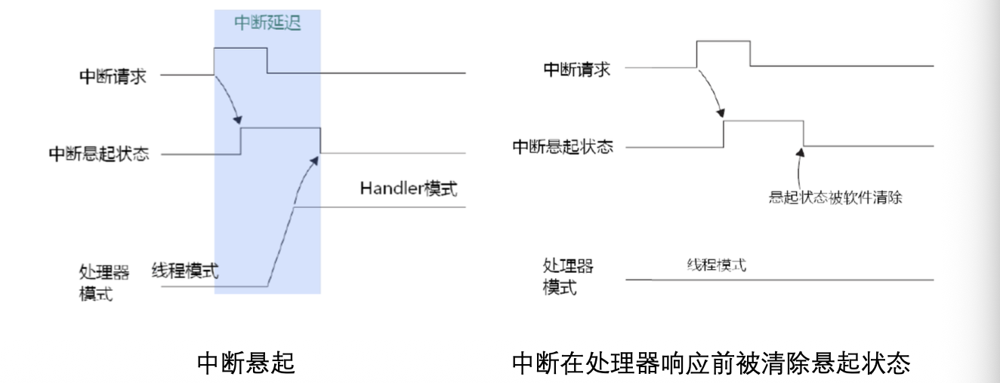
（2）中断活跃
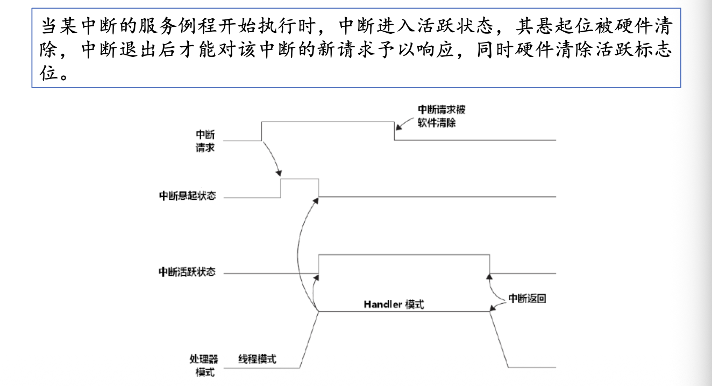
（3）中断请求信号保持
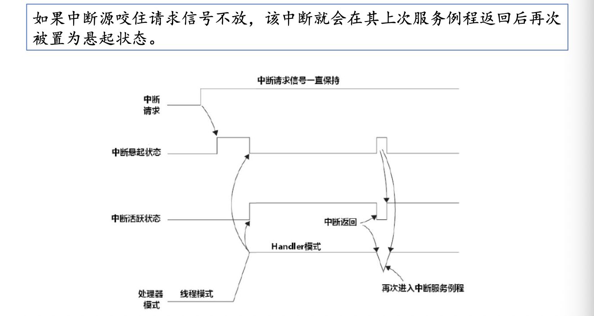
7. 调试与跟踪
- 基于CoreSight架构实现以下两种模式
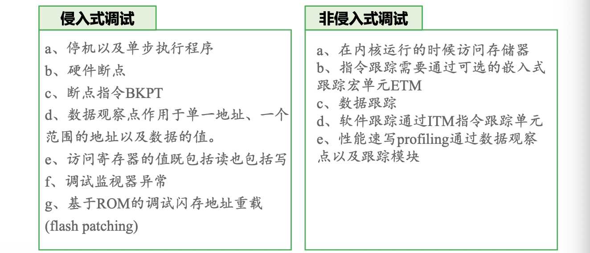 - 调试访问端口：DAP
- 调试接口：DP（一端连接 DAP，一端连接到调试器）
- 跟踪接口：CoreSight 架构还可以用于数据跟踪
8. Cortex-M3 实用功能
（1）SysTick 定时器
SysTick 是集成在内核中的 24 位系统节拍定时器，对实时操作系统（RTOS）至关重要
- 基本机制：它是一个 24 位的倒计数定时器，当计数减到 0 时，会自动从 RELOAD 寄存器中重装定时初值
- 运行状态：只要不清除 SysTick 控制及状态寄存器中的使能位，定时器就会持续运行
- 核心寄存器：
- CTRL (0xE000E010)：控制和状态寄存器，用于设置时钟源、使能中断及查询计数标志
- RELOAD (0xE000E014)：重装载值寄存器，存储定时器溢出后自动加载的初值
- CURRENT (0xE000E018)：当前值寄存器，反映当前的计数值
- CALIB (0xE000E01C)：校准值寄存器，提供硬件参考时钟信息
- 主要用途：常用于产生操作系统所需的“滴答”中断，或作为基本的定时/计数工具
（2）电源管理
Cortex-M3 在内核级别提供了功耗优化方案，支持两种主要的睡眠模式
- 睡眠模式 (Sleep)：由内核的
SLEEPING信号指示 - 深度睡眠模式 (Deep Sleep)：由内核的
SLEEPDEEP信号指示，用于更大幅度降低功耗 - 唤醒机制：在睡眠状态下，系统时钟可以停止，但通常保持 FCLK 运行，以确保处理器能被 SysTick 异常或外部中断唤醒
- 状态判定：开发者可以通过读取 NVIC（嵌套向量中断控制器）的相关系统控制寄存器来判定当前的睡眠模式及上下文
（3）复位序列
复位是处理器通电或重启后的起始动作，Cortex-M3 有一套固定的操作流程来定栈和定位代码入口
- 读取 MSP：处理器首先从地址
0x00000000处读取 32 位整数，作为 主堆栈指针 (MSP) 的初始值，从而完成“定栈” - 读取 PC：随后从地址
0x00000004处读取 32 位整数，作为 程序计数器 (PC) 的初始值，即复位向量，决定代码执行的入口地址 - 堆栈模型：在 Cortex-M3 中，堆栈是向下生长的（即从高地址向低地址方向压栈）
- 内存布局示例：例如复位向量指向地址
0x00000101，则处理器将从该处的启动引导代码开始运行
第三章 STM32 最小系统及开发环境
1. 系统组成
（2）电源电路
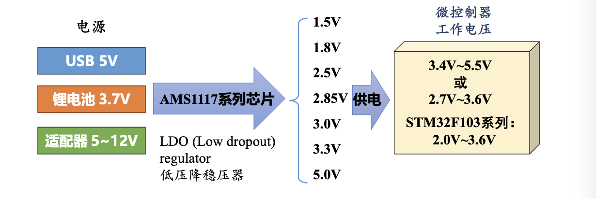
- 常用 AMS1117 芯片将 5V 电压降至 3.3V 供 VDD 使用。
- STM32 内部的电压调节器将外部 3.3V 的电压转化为 1.8V 提供给 Cortex-M3、内存以及外设使用。
- C1、C2 是输入电容，防止断电后电压倒置。
- C3、C4 是输出滤波电容，抑制自激振章 & 稳定输出电压。
（3）时钟电路
- 时钟频率越高，单片机运行速度越快，功耗越大。
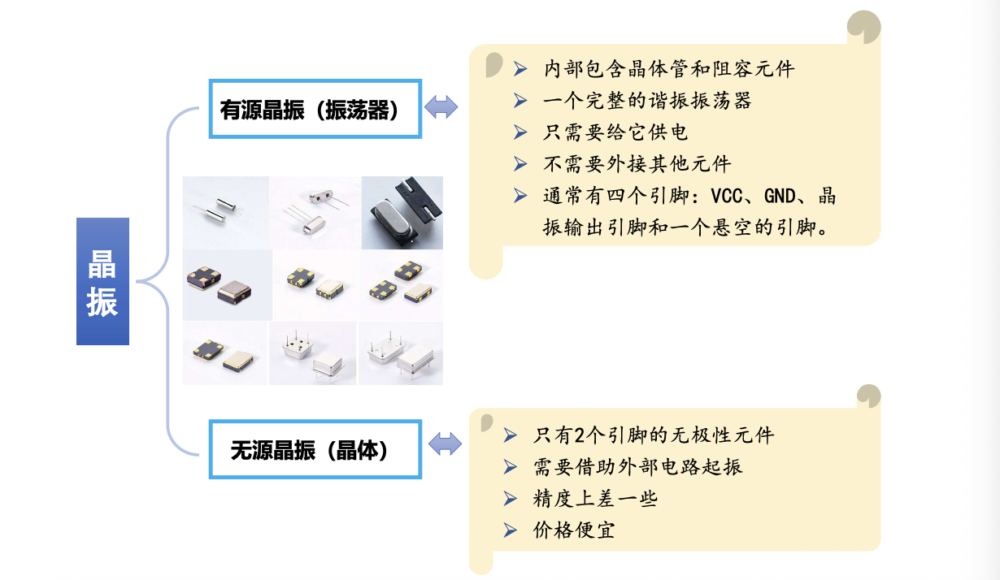 - 高速外部时钟 (HSE)：通常外接 8MHz 晶振，通过 PLL 倍频最高可达 72MHz 作为系统主时钟。
- 低速外部时钟 (LSE)：外接 32.768kHz 晶振，主要用于 RTC 精准计时。
（4）复位电路
- 上电自动复位
- 依靠 RC 电路产生的 ~1ms 延迟。
- 上电瞬间电容两端电压不能突变，Reset 出现短暂低电平。之后芯片复位，进入充电时间：
$t=1.1R\times C$（电阻、电容）
- 手动按键复位
- 按键按下时，Reset 短暂接地，产生低电平
（5）调试和下载电路
调试接口：JTAG（5引脚）、SWD（2引脚，更常用）
Cortex-M3 的三种启动方式，主要依靠不同电平组合：
| BOOT0 | BOOT1 | 启动模式 | 说明 |
|---|---|---|---|
| 0 | X | 用户闪存 (Flash) | 最常用的正常运行模式（从 0x08000000 启动） |
| 1 | 0 | 系统存储器 | 用于串口下载程序（ISP） |
| 1 | 1 | 内置 SRAM | 用于在内存中调试代码 |
2. 开发环境 & 基础配置
HAL库开发： STM32CubeMX+Keil 5

- 下载工具：
J-Link：通用型，支持多种内核及 IDE 。
ST-Link：ST 公司专用于 STM8/STM32，支持全速运行和单步调试 。
第四章 嵌入式C语言
C语言的优势：汇编语言操作底层、功能性强
外设功能模块化设计：包含一个源文件（.c文件）和一个头文件（.h文件）
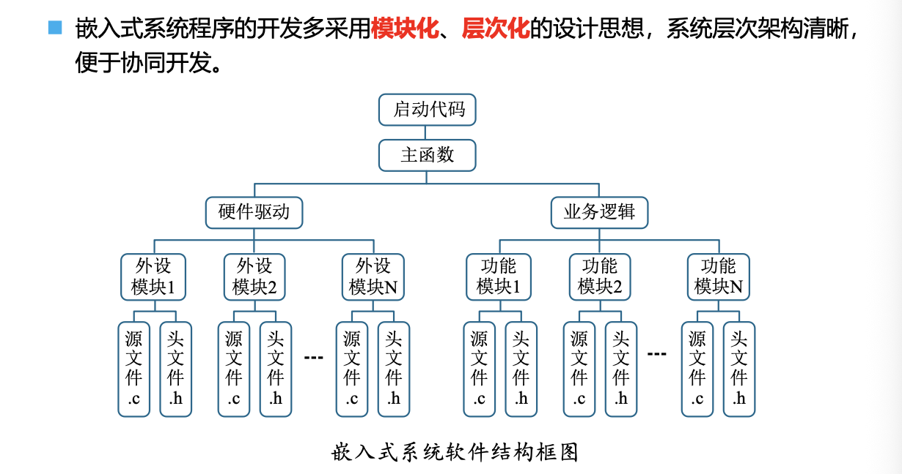
1. 数据类型 & 运算符
（1）数据类型
- STM32 是32位处理器，与一般64位电脑不同。
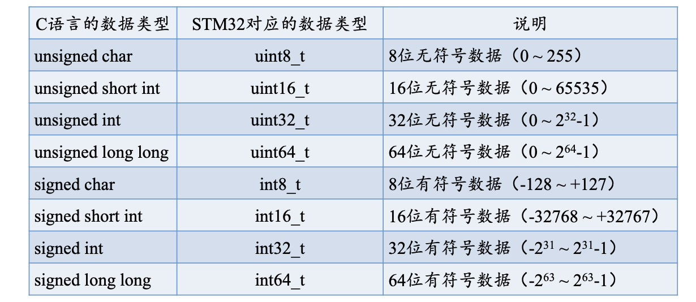
| 数据类型 | 字节数 |
|---|---|
| char | 1 |
| short | 2 |
| int/long/float/指针 | 4 |
| double | 8 |
- 1字节 = 8 bit

（2）运算符
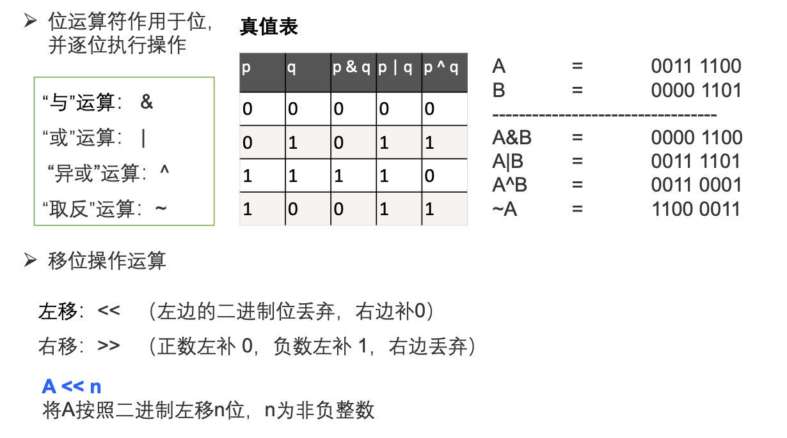
- 三大战术 (背下来)：
- 置1 (Set)：用 |。 例如 Reg |= (1 << 3); (第3位置1)
- 清0 (Clear)：用 & ~。 例如 Reg &= ~(1 << 3); (第3位清0)
- 翻转 (Toggle)：用 ^。 例如 Reg ^= (1 << 3); (第3位翻转)
注意：“异或”是不同取1，相同取0。

2. 四大核心修饰符
（1）const（只读）
- 作用：定义只读变量，保证其值在编译时不能改变。
- 目的：防止变量的值被误改。
- 要求：const关键词修饰的变量在声明时必须初始化。
- 属性：变量是全局定义的。
- 格式：` const uint32_t(此处为初始化) a = 0xffff1111;
（2）static（静态）
修饰局部变量：修饰后的变量称为静态变量，存储在静态区，函数结束后不销毁，下次调用保留上次的值。
修饰全局变量/函数：限制作用域，只在当前.c文件中可见（私有化），其它源文件不能引用，避免了相同变量名而引发的错误。
（3）volatile（易变）
- 作用：每次读取或者修改变量值的时候，必须从内存中重新读取，而不是使用保存在寄存器里的备份。
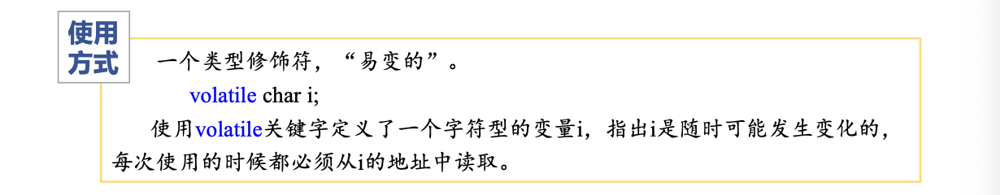
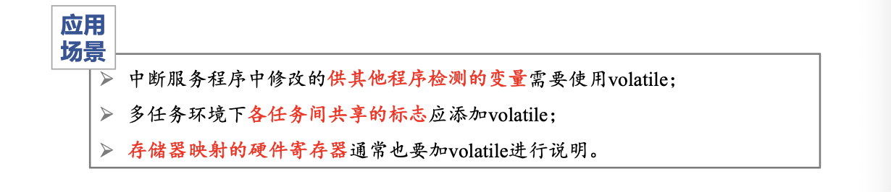
（4）extern（外部）
注意：extern是一个重新声明，而不是定义。
- 含义：声明变量/函数是在别的文件定义的。例如：main.c要调用led.c里的变量，必须在main.c里用extern声明。
3. struct结构体
本博客所有文章除特别声明外，均采用 CC BY-NC-SA 4.0 许可协议。转载请注明来源 WENTAO's Blog！
评论